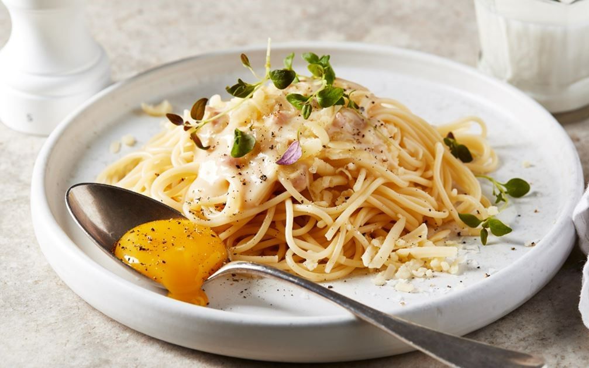
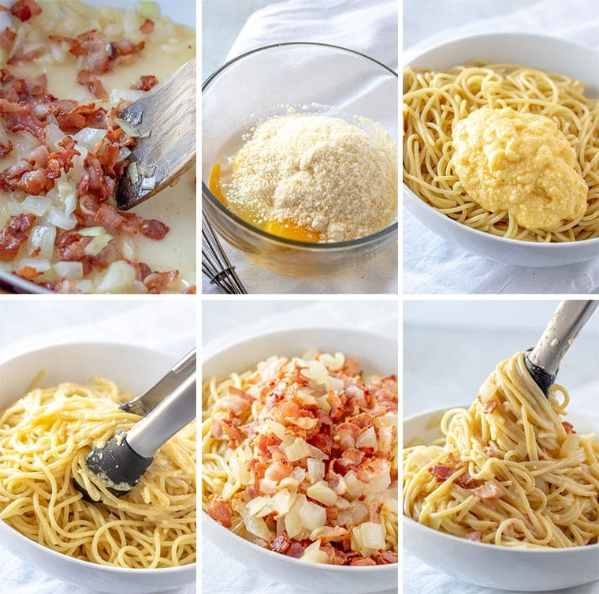

PASTA
CARBONARA
Pasta carbonara eller spaghetti carbonara - älskad favorit med grädde och rökt fläsk eller bacon. Passar lika bra till släktmiddagen som till fredagsmyset. Enkelt och recept på en riktig klassiker. Klar på en kvart! Servera pasta carbonara med en äggula.
| Tid: 30min |
Antal ingridienser: 8 |
Svårighets nivå: |
- 400 g Spaghetti
- 160 g Bacon
- 2 finhackade vitlöksklyftor
- 4 äggulor
- 85 g Parmesan
- 4 msk jungfruolivolja
- salt och svartpeppar
- Hackad färsk persilja
Ingredienser:
Gör så här:
Koka pastan enligt förpackningens anvisningar, spara 1 1/2 dl av kokvattnet.
Värm olivoljan i en stekpanna och stek baconet knaprigt.
I slutet tillsätter du vitlöken.
Kombinera äggulor och riven ost i en blandningsform och tillsätt sedan 2-3 msk kylt pastavatten.
Rör ner ägg- och ostblandningen i den nykokta pastan i stekpannan.
För att få en krämig konsistens, späd med pastavatten.
Krydda med salt och peppar.
Mal noga med svartpeppar tills det liknar kolgranulat.
Toppa varje portion med lite extra parmesanost och persilja.
Värm olivoljan i en stekpanna och stek baconet knaprigt.
I slutet tillsätter du vitlöken.
Kombinera äggulor och riven ost i en blandningsform och tillsätt sedan 2-3 msk kylt pastavatten.
Rör ner ägg- och ostblandningen i den nykokta pastan i stekpannan.
För att få en krämig konsistens, späd med pastavatten.
Krydda med salt och peppar.
Mal noga med svartpeppar tills det liknar kolgranulat.
Toppa varje portion med lite extra parmesanost och persilja.
Liknande recept:

